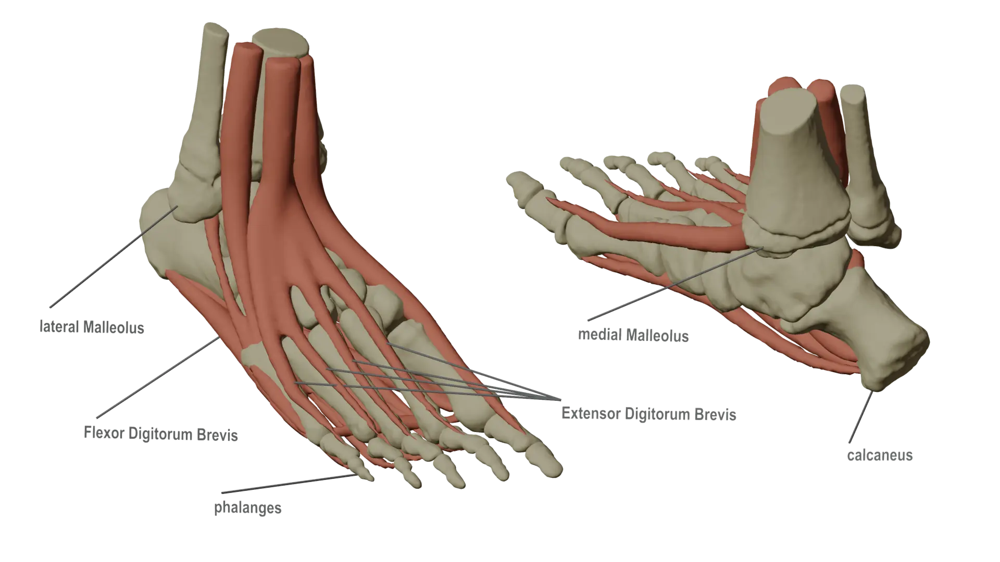
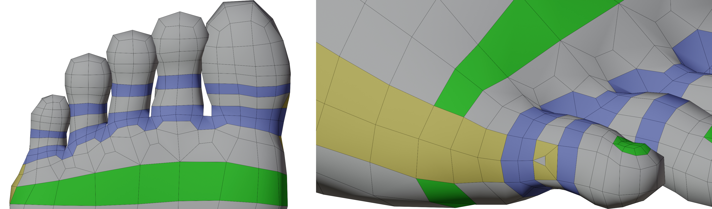
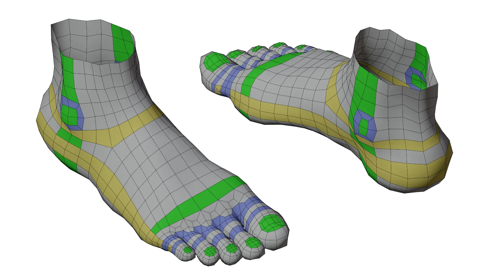

Modeling a Human Foot
Next up in our ongoing human topology series, the human foot! This guide looks at the basics of modeling a human foot while keeping anatomy and good topology in mind.
Identifying Forms

The human foot is deceitfully simple. At rest, the major forms of the foot may seem unimportant, but when the foot deforms, vital forms start appearing everywhere! Because of this, the bones, muscles, tendons, and ligaments of the foot should all be factors when building a 3d foot.
Starting from the top, the bony bumps on each side of the ankle joint (the medial Malleolus and posterior Malleolus) are vital forms when considering topology. The ankle joint is a major area of deformation. If we do not account for these two areas in our topology, the bony protrusions could collapse when deformed rather than staying in place.
Next, the tendons across the top (and bottom) of the foot (extensor and flexor digitorum brevis) are important for representiung the movment of the foot when toes move. These tendons can deform the entire top surface of the foot along its length when the toes move.
Lastly, and most obviously, the bones of the toes, heal (calcaneus), and lower leg form the main shape of the foot. After all, most feet are quite bony looking! Knowing where the bones of the foot are is important for developing the general shape of the foot and for seeing all the possible ways the foot can deform.
Placing Edge Loops
It’s time to build a model! If you already have a sculpt, you can use the sculpt as a base for how to shape edge loops. Otherwise, be prepared to tweak and adjust topology as you look at reference images.The key to a strong model is constant refinement using reference images in a variety of poses.

The first loops you’ll want to make are the green and yellow loops. These form the main topology in each axis that the rest of the model will connect to. Once those loops are in place, the blue loops help form the details like the ankle and toes.
Loop Reductions & Poles
With all of the key edge loops placed, we need to work on reducing the number of loops coming fro mthe toe area towards the ankle. Reducing the number of loops is necessary so that we don’t end up with overly dense topology at the ankle and legs where such high density topology isn’t needed. Ideally, we want 16 or 24 loops at the top of the ankle so that the topology fits with the rest of a full character model.

To do this, we can use edge loop reduction flows to cut down the number of edge loops as we move away from the toes. As you can see from the image above, these transitions mainly take place on the flat surface area of the foot, rather than directly wear the toes attach. This is so that the edge poles resulting from the loop reductions lay on the flattest part of the model, rather than in a joint area where they could cause shading problems under deformation. The same can also be said of the the E-pole transition near the ankle.

And that wraps up this guide! Have any tips of your own? Leave them in the comments below! Also, If you enjoyed this post, please consider supporting the site by sharing it!